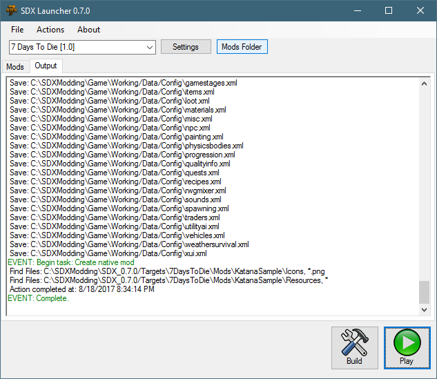
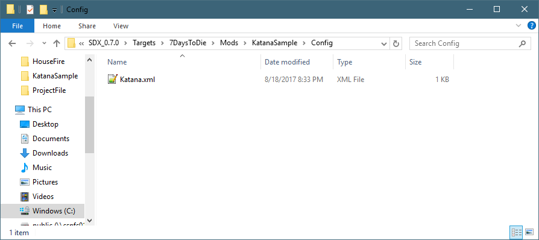
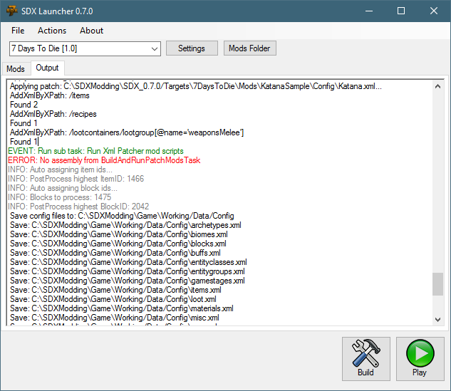
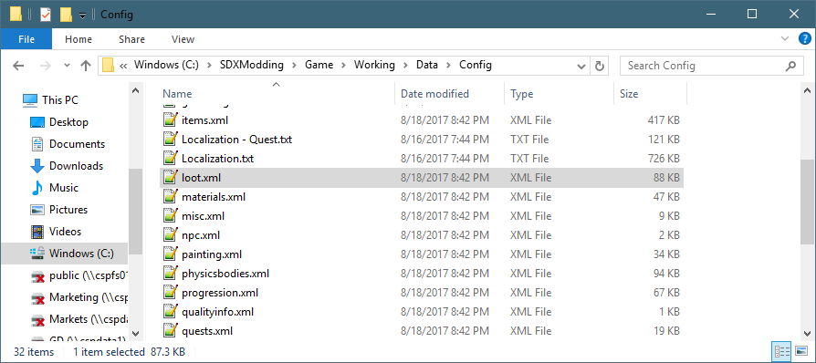
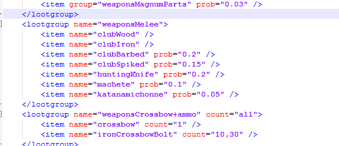

With Steel being an expensive resource for a katana, we want to give players the chance of finding one. Let's add the Katana to a loot group.
In the SDX Launcher, click on the Mods Folder.

Then navigate into the double click on the Katana Sample folder, then the Config folder:

Using Notepad++, edit the file
Add a new "<config> node under the katanamichonne recipe by copy and pasting the Loot Snippet, highlighted in Blue for clarity
Loot Snippet |
<!-- Let's add the Katana to the melee loot group --> <config name="loot"> <append xpath="/lootcontainers/lootgroup[@name='weaponsMelee']"> <item name="katanamichonne" prob="0.05" /> </append> </config> |
So this one is more complex the other ones. Notice the "<append xpath"?
That's an xpath script that tells the SDX Launcher to look in the <lootcontainers> tag, find the <lootgroup> that has the attribute name='weaponsMelee', and appends it to the node list.
The Katana.xml should look like this now:
File: KatanaSample\Config\Katana.xml |
<configs> <!-- This tells SDX to add to the Items.xml --> <config name="items"> <!-- This tells SDX to add the following Items to the bottom of the Items list --> <append xpath="/items"> <!-- New item will be Katana --> <item id="" name="katanamichonne"> <!-- Extend it from the machete, but add the custom mesh --> <property name="Extends" value="machete"/> <property name="Meshfile" value="#michonnekatana?katana" /> </item> </append> </config> <!-- Adding a new recipe for the mod --> <config name="recipes"> <append xpath="/recipes" > <recipe name="katanamichonne" count="1" craft_area="workbench"> <ingredient name="forgedSteel" count="20"/> <ingredient name="wood" count="4"/> <ingredient name="leather" count="4"/> </recipe> </append> </config> <!-- Let's add the Katana to the melee loot group --> <config name="loot"> <append xpath="/lootcontainers/lootgroup[@name='weaponsMelee']"> <item name="katanamichonne" prob="0.05" /> </append> </config> </configs> |
Once you've saved your changes, go back to the SDX Launcher, and click on the Build Button.
If you look through the log file, you'll see where it's adding the new XML:

Remember, the "ERROR: No assembly from BuildAndPatchModsTask" is not a fatal error right now, since we are not compiling any scripts for the Katana
Once compiled, look in the loot.xml of the Working game:

And search for "katana"
File: Data\Config\loot.xml |
 |
Created with the Personal Edition of HelpNDoc: Free EPub producer